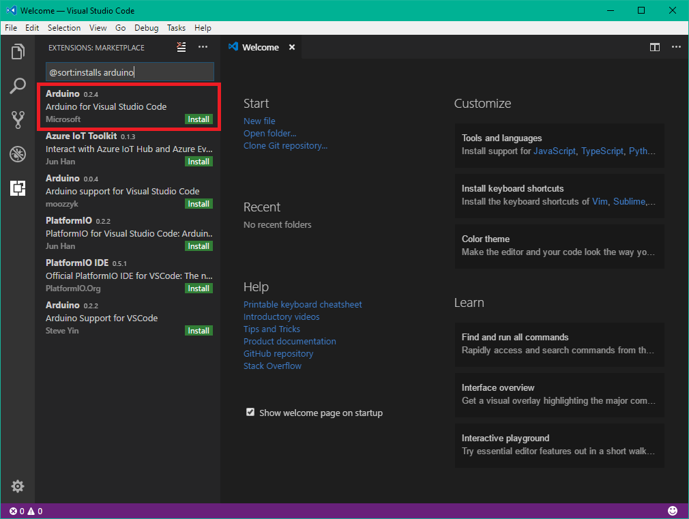
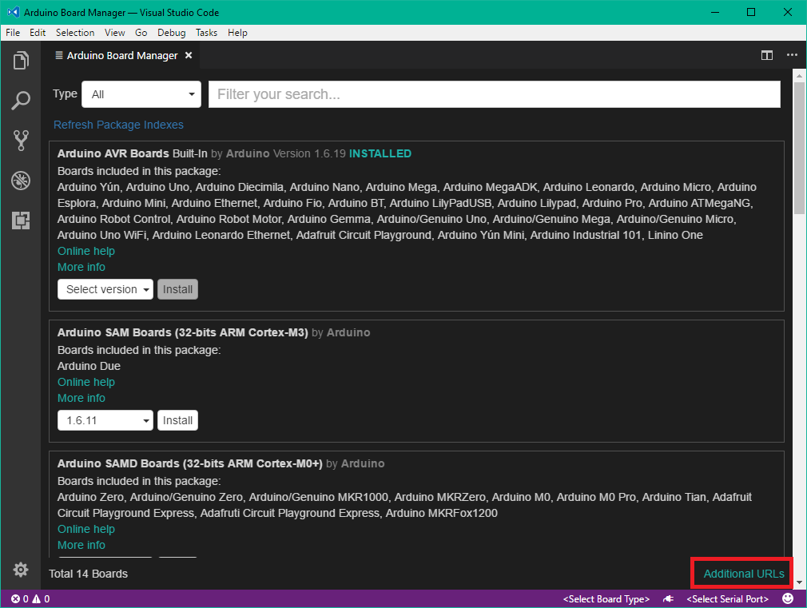
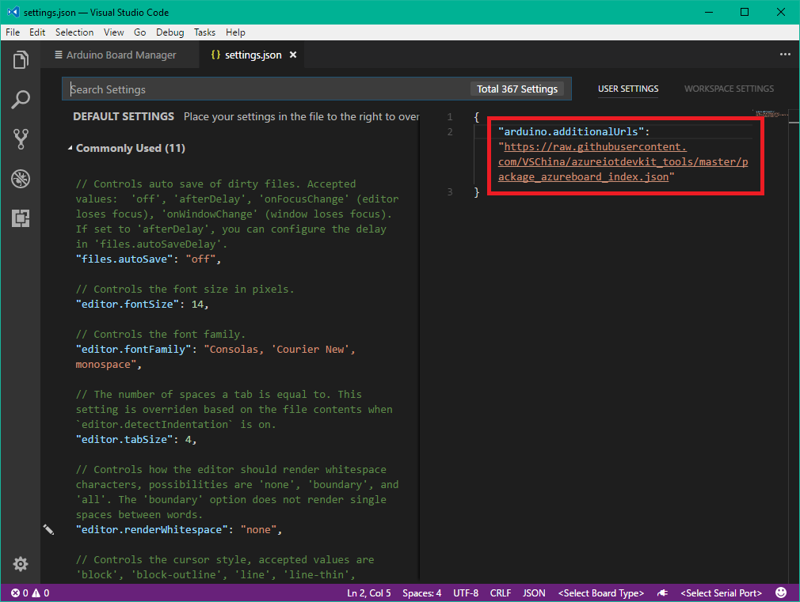
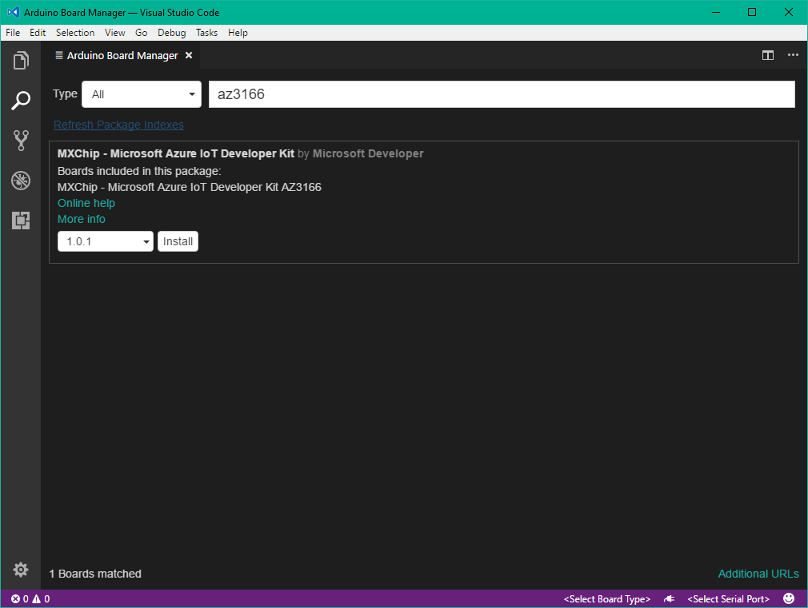
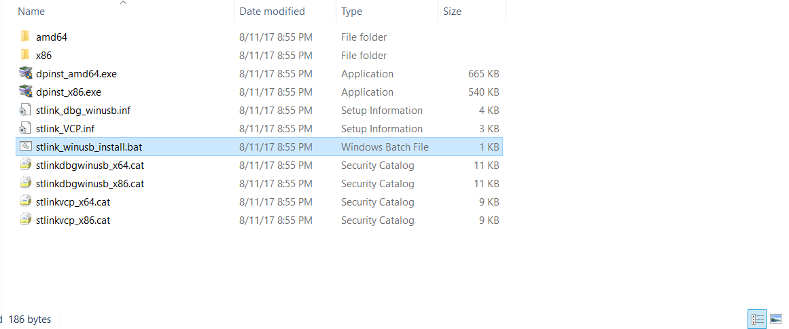
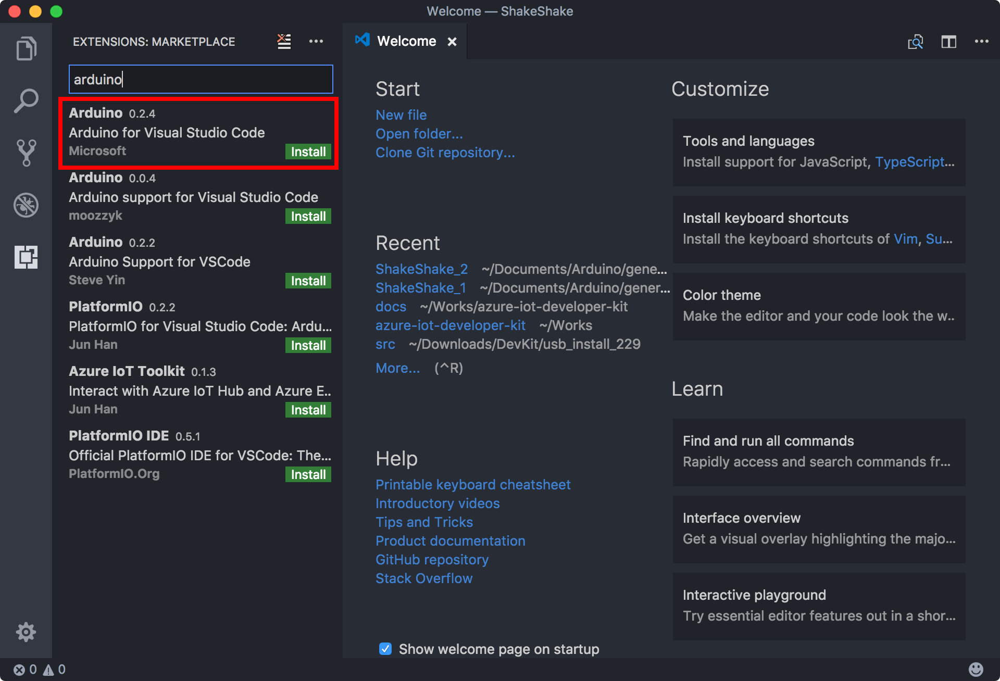
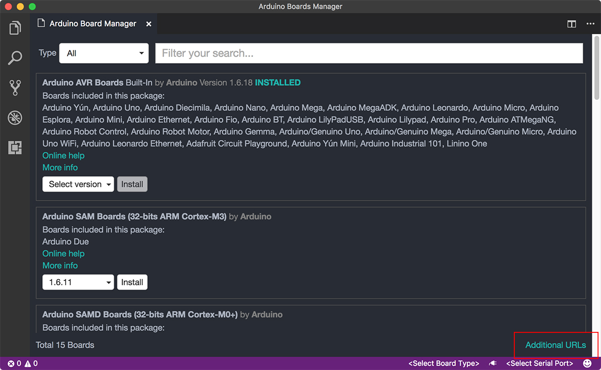
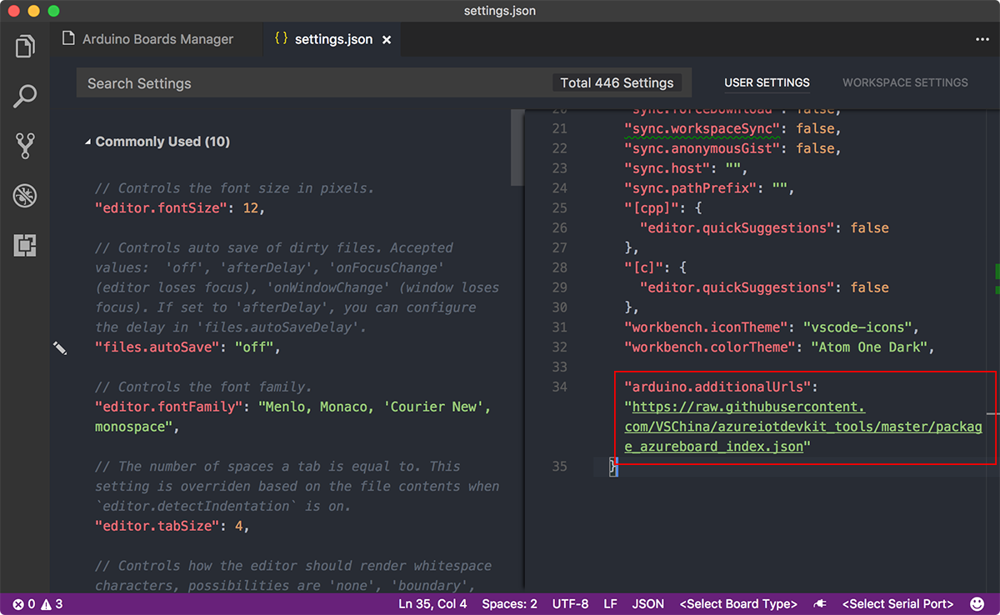
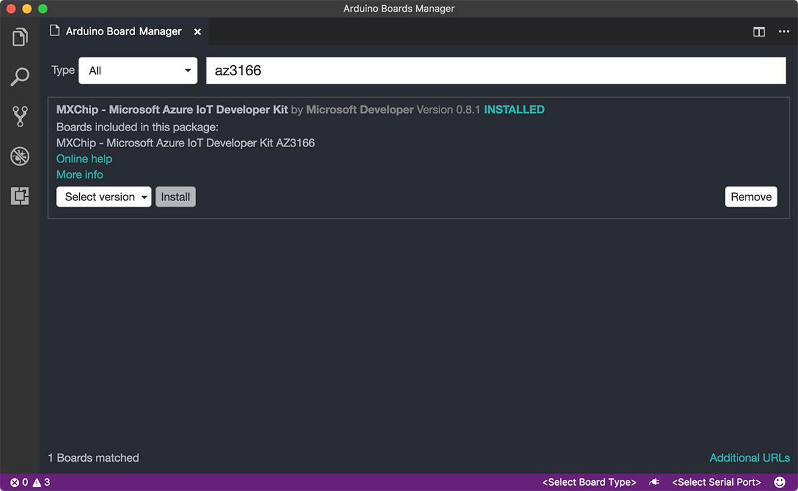

Manual installation
Notice: This article is only for the old experiences by using the installer, and will be obsoleted soon. we strongly recommend you to use Azure IoT Workbench which has much better experiences on both installation and development for developing on IoT DevKit. You can follow this tutorial to install Azure IoT Workbench and start up the new journey with IoT DevKit.
If you have problems on using the one-click install experience, follow these steps to manually install tools and packages for IoT DevKit development.
Windows
Step 1. Install Azure CLI 2.0 MSI
Follow the official guide to install Azure CLI 2.0 with MSI:
Download and run MSI for the Windows command line from: https://aka.ms/InstallAzureCliWindows
Step 2. Install Arduino IDE
The Visual Studio Code Arduino extension relies on the Arduino IDE. Download and install the Arduino IDE for Windows. Make sure you download the Windows Installer version.
Step 3. Install Visual Studio Code
Download and install Visual Studio Code for Windows. This is the primary development tool for building IoT DevKit applications.
Step 4. Download the latest package
-
Download Windows Installer to install Node.js.
-
Download the .zip file that contains required task scripts for IoT DevKit development in VS Code.
Locate the .zip and extract it to your Windows user folder (C:\Users\{your name}\azure-board-cli). Then launch Command Prompt (cmd) and run the following commands to configure:
cd C:\Users\{your name}\azure-board-cli
npm install
Step 5. Install the VS Code extension for Arduino
You can install Azure Marketplace extensions directly in Visual Studio Code. Select the extensions icon in the left pane, search for Arduino, and then select Install:

Step 6. Install the IoT DevKit board package
Add the IoT DevKit board by using Board Manager in Visual Studio Code.
-
Use
Ctrl+Shift+Pto open the command palette, type Arduino, and then find and select Arduino: Board Manager. -
Select Additional URLs at the lower right.

- In the
settings.jsonfile, add a line at the bottom of the USER SETTINGS pane and save."arduino.additionalUrls": "https://raw.githubusercontent.com/VSChina/azureiotdevkit_tools/master/package_azureboard_index.json"
- In Board Manager, search for az3166 and install the latest version.

Step 7. Install ST-Link drivers
ST-Link/V2 driver is required to communicate with the IoT DevKit.
-
Download the driver from STMicro product page.
-
Extract the .zip file and double click
stlink_winusb_install.batto install:
You now have all the necessary tools and packages installed for Windows.
macOS
Step 1. Install Azure CLI 2.0
Follow the official guide to install Azure CLI 2.0. We recommend install with Homebrew:
-
If you don’t have it already, install Homebrew by following the Homebrew installation instructions.
-
If you have previously installed the CLI manually, follow the manual uninstall instructions.
- Update your local Homebrew repositories.
brew update - Install the
azure-clipackage.brew install azure-cli
Step 2. Install Arduino IDE
The Visual Studio Code Arduino extension relies on the Arduino IDE.
-
Download the Arduino IDE for macOS.
-
Extract downloaded .zip file.
-
Drag and drop
Arduino.appinto Applications folder to install.
Step 3. Install Visual Studio Code
Download and install Visual Studio Code for macOS. This is the primary development tool for building IoT DevKit applications.
Step 4. Download the latest package
-
Install Node.js. You can use popular macOS package manager Homebrew or pre-built installer to install it.
-
Download the .zip file that contains required task scripts for IoT DevKit development in VS Code.
Locate the .zip file and extract it. Then start the Terminal app and run the following commands:
a. Move extracted folder to your macOS user folder:
mv [.zip extracted folder] ~/azure-board-cli
cd ~/azure-board-cli
b. Install npm packages:
npm install
Step 5. Install the VS Code extension for Arduino
You can install Azure Marketplace extensions directly in Visual Studio Code.
-
Select the extensions icon in the left pane, search for Arduino, and then select Install:

-
Open Preference > Settings, add a line within the USER SETTINGS pane and save:
"arduino.path": "/Applications"
Note: Make sure the Arduino path is set the right location you have installed your Arduino IDE.
Step 6. Install the IoT DevKit board package
Add the IoT DevKit board by using Board Manager in Visual Studio Code.
-
Use
Cmd+Shift+Pto open the command palette, type Arduino, and then find and select Arduino: Board Manager. -
Select Additional URLs at the lower right.

- In the
settings.jsonfile, add a line within the USER SETTINGS pane and save:"arduino.additionalUrls": "https://raw.githubusercontent.com/VSChina/azureiotdevkit_tools/master/package_azureboard_index.json"
- In Board Manager, search for az3166 and install the latest version.

You now have all the necessary tools and packages installed for macOS.
Ubuntu
The IoT DevKit development environment can be installed and ran on Linux such as Ubuntu with manual configurations. Here is a detailed instructions from Noel Bundick about it: Using the Azure IoT DevKit with Linux.
Next Steps
You are all set! It’s time to build your first IoT application by following instructions in Projects Catalog.